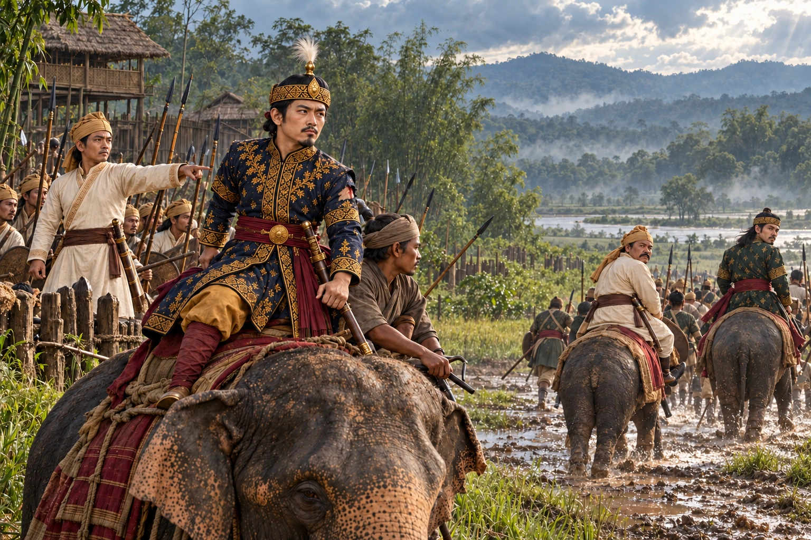

Sudangphaa Repels the Mong Kawng Invasion
c. 1401 · The coming of Sukaphaa

The rival claimant Tai Sulai returns with a Mong Kawng (Mungkang) army led by the defector Tasim Pou. Sudangphaa meets it near Kuhiarbari in the Tipam country and defeats it, though he is lightly wounded by a spear.
People: Sudangphaa (Bamuni Konwar), Tai Sulai, Tasim Pou Borgohain, Nangchukham Borgohain
Open this scene in the interactive archive · Follow this event on MAP